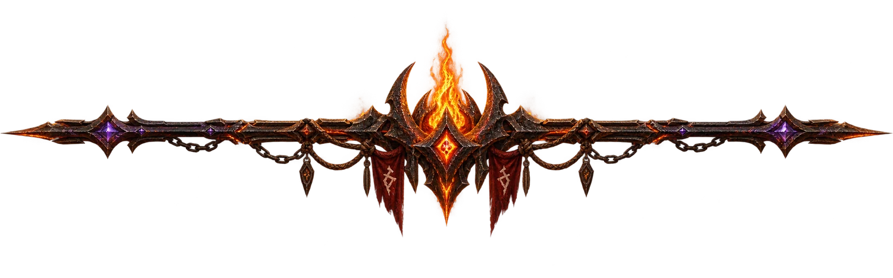

· ONE FLAME · ONE LAW · ONE BALANCE ·


· THEY CAST US OUT · THEY WILL NOT SILENCE THE FLAME ·
STATUS: AWAITING THE JUDGEMENT OF THE FLAME

KEEPERS OF THE FLAME
· THEY STOOD WITH THE FLAME WHEN THE GATES WERE CLOSED ·

- Rubio
- strontsiy
- Savvazs
- picksy
· THE FLAME REMEMBERS ITS FAITHFUL ·
NON-BELIEVERS
· THE FLAME AWAITS THOSE WHO HAVE YET TO SEE ·
- Nikita
- dsn
- invite
- Undying
- Aivan
- BUSDRIVER
- Tecto
- NoCommenT
- BlackillusioN
- BigusDickus
- Seriel
- Copycat
- kill
- Eirial
- Ghast
- Neturno
· THE FLAME REMEMBERS ·